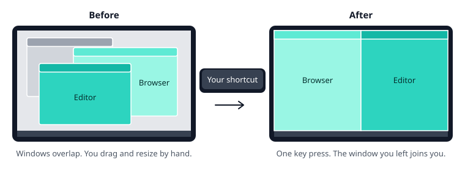
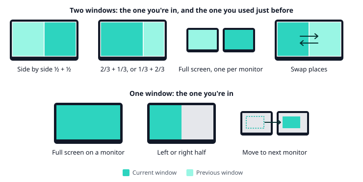

pane-pogo
Put two windows side by side with one key press.
A small Windows tray app that tiles the window you're using next to the one you used just before it.

Why it exists
You're writing in one window and reading from another. They overlap, so you keep switching, dragging and resizing. Windows Snap places one window at a time. pane-pogo arranges the window you're in and the one you used just before it, with a single shortcut.
Layouts

Set up your shortcuts

On first run, Alt+Shift+E puts the current window on the left half of the primary monitor, and Alt+Shift+R on the right half.
Install
Download pane-pogo.exe from the latest release and run it. It appears in the system tray. To start it at sign-in, tick Start with Windows in the tray menu.
To build from source, install Rust, then:
cargo build --release
.\target\release\pane-pogo.exeRequires Windows 11. Windows 10 is untested. The exe isn't code-signed, so SmartScreen may warn on first run.
Docs
- README, including known limitations
- How to use pane-pogo
- Specification